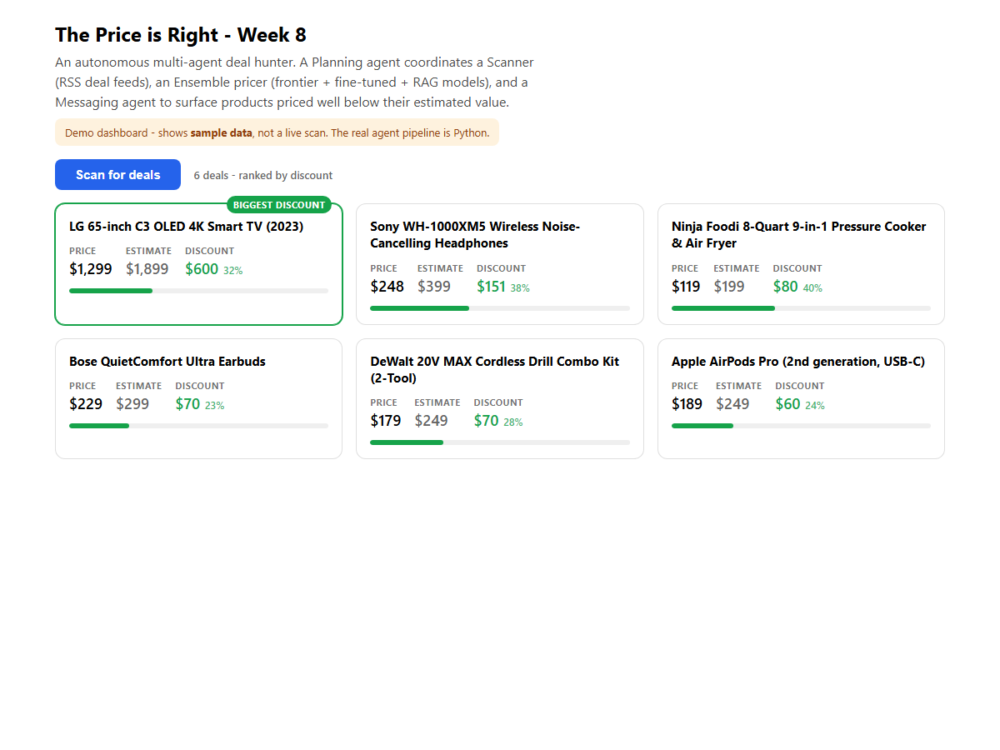

Week 8 · Day 5 — The Price is Right: the Full System
Bring it together into an autonomous system with a dashboard and push notifications that finds and alerts you to real underpriced deals - the finished course project.
Companion to Ed Donner's course · uv setup · Python + TypeScript/React · code verified against the repoThis is the top of the mountain. Over four days this week you built the pieces of a deal-hunting system: a planner, a scanner that reads deal feeds, and a pricer that blends a fine-tuned model, a RAG lookup and a frontier model. Today you give it the one thing it was still missing - autonomy. You wrap the whole framework in a small Gradio dashboard that runs on a timer, shows the deals it has found in a table, and sends a push notification to your phone whenever it spots something priced well below what it is really worth. Then you can walk away and let it work.
The instructor calls this "the beginning of the end": the final day of the final week. By the end of this page the course's whole story comes together in one running program - scraping and summarising (Week 1), a UI and tools (Week 2), open-source models (Week 3), model selection (Week 4), RAG (Week 5), data curation and fine-tuning (Weeks 6 and 7), and now an agentic system that uses all of it at once.
The last piece: autonomy
An agent that runs once and stops is not much use. You do not want to sit and press a button every minute hoping a bargain appears. The missing capability is the one that turns a clever script into an autonomous agent: it should keep running on its own, scan again and again, remember what it has already found, and reach out to you only when something is worth your attention. The instructor is blunt that the "agent framework" doing this is "nothing more than a Python script to glue everything together" - you do not need a heavyweight framework; a loop, some memory and a notification are enough.
Gradio gives us three gifts for free that make this easy. Its low-level gr.Blocks API lets us lay out a
real dashboard (a title, a live table, a log). Its invisible gr.Timer component wakes the app up on a
schedule so the agent runs itself. And a single function call - messenger.alert(...) - fires a
push notification to a phone and watch. Put those together
and the system becomes something you start once and then forget about until it buzzes.
The code: wiring Gradio to the agent framework
Below is the day's notebook, built up the way the instructor builds it - one cell at a time, each cell adding a
little more to the dashboard. It starts with a bare gr.Blocks window, adds a data table, hooks the table
up to the agent framework's memory, makes a row click send an alert, and finally hands off to the real standalone app.
Read it top to bottom as four growing versions of the same screen.
import gradio as gr
from deal_agent_framework import DealAgentFramework
from agents.deals import Opportunity, Deal
with gr.Blocks(title="The Price is Right", fill_width=True) as ui:
with gr.Row():
gr.Markdown('<div style="text-align: center;font-size:24px">The Price is Right - Deal Hunting Agentic AI</div>')
with gr.Row():
gr.Markdown('<div style="text-align: center;font-size:14px">Autonomous agent framework that finds online deals, collaborating with a proprietary fine-tuned LLM deployed on Modal, and a RAG pipeline with a frontier model and Chroma.</div>')
ui.launch(inbrowser=True)
# Updated to change from height to max_height due to change in Gradio v5
# With much thanks to student Ed B. for raising this
with gr.Blocks(title="The Price is Right", fill_width=True) as ui:
initial_deal = Deal(product_description="Example description", price=100.0, url="https://cnn.com")
initial_opportunity = Opportunity(deal=initial_deal, estimate=200.0, discount=100.0)
opportunities = gr.State([initial_opportunity])
def get_table(opps):
return [[opp.deal.product_description, opp.deal.price, opp.estimate, opp.discount, opp.deal.url] for opp in opps]
with gr.Row():
gr.Markdown('<div style="text-align: center;font-size:24px">"The Price is Right" - Deal Hunting Agentic AI</div>')
with gr.Row():
gr.Markdown('<div style="text-align: center;font-size:14px">Deals surfaced so far:</div>')
with gr.Row():
opportunities_dataframe = gr.Dataframe(
headers=["Description", "Price", "Estimate", "Discount", "URL"],
wrap=True,
column_widths=[4, 1, 1, 1, 2],
row_count=10,
col_count=5,
max_height=400,
)
ui.load(get_table, inputs=[opportunities], outputs=[opportunities_dataframe])
ui.launch(inbrowser=True)
agent_framework = DealAgentFramework()
agent_framework.init_agents_as_needed()
with gr.Blocks(title="The Price is Right", fill_width=True) as ui:
initial_deal = Deal(product_description="Example description", price=100.0, url="https://cnn.com")
initial_opportunity = Opportunity(deal=initial_deal, estimate=200.0, discount=100.0)
opportunities = gr.State([initial_opportunity])
def get_table(opps):
return [[opp.deal.product_description, opp.deal.price, opp.estimate, opp.discount, opp.deal.url] for opp in opps]
def do_select(opportunities, selected_index: gr.SelectData):
row = selected_index.index[0]
opportunity = opportunities[row]
agent_framework.planner.messenger.alert(opportunity)
with gr.Row():
gr.Markdown('<div style="text-align: center;font-size:24px">"The Price is Right" - Deal Hunting Agentic AI</div>')
with gr.Row():
gr.Markdown('<div style="text-align: center;font-size:14px">Deals surfaced so far:</div>')
with gr.Row():
opportunities_dataframe = gr.Dataframe(
headers=["Description", "Price", "Estimate", "Discount", "URL"],
wrap=True,
column_widths=[4, 1, 1, 1, 2],
row_count=10,
col_count=5,
max_height=400,
)
ui.load(get_table, inputs=[opportunities], outputs=[opportunities_dataframe])
opportunities_dataframe.select(do_select, inputs=[opportunities], outputs=[])
ui.launch(inbrowser=True)
# Reset memory back to 2 deals discovered in the past
from deal_agent_framework import DealAgentFramework
DealAgentFramework.reset_memory()
import logging
root = logging.getLogger()
root.setLevel(logging.INFO)
!uv run price_is_right.pyLine by line
| Line(s) | Code | What it does & why |
|---|---|---|
| 1-3 | import gradio as gr …from deal_agent_framework import DealAgentFrameworkfrom agents.deals import Opportunity, Deal | The three imports that make the dashboard possible. gradio builds the UI. DealAgentFramework is the whole system you built on Days 1-4 - instantiate it and call run() to set everything off. Opportunity and Deal are the data shapes the framework stores: a Deal is a product with a description, price and URL; an Opportunity wraps a deal with an estimate and a discount. |
| 5-13 | with gr.Blocks(title="The Price is Right", fill_width=True) as ui: | The dashboard skeleton. gr.Blocks is Gradio's low-level API: unlike gr.Interface (one function, inputs, outputs) it lets you place widgets in rows and columns yourself. fill_width=True uses the whole browser width instead of leaving big margins. Inside, each with gr.Row(): is one horizontal strip; here two rows hold a big centred title and a subtitle written as raw HTML in a gr.Markdown. ui.launch(inbrowser=True) pops the window open immediately. |
| 20-22 | initial_deal = Deal(...)initial_opportunity = Opportunity(...)opportunities = gr.State([initial_opportunity]) | One hard-coded example deal so the table is not empty on first load. gr.State is Gradio's way to remember a value between interactions without showing it - here, the list of opportunities the UI knows about. |
| 24-25 | def get_table(opps): return [[opp.deal.product_description, opp.deal.price, opp.estimate, opp.discount, opp.deal.url] for opp in opps] | Turns the list of Opportunity objects into a list of rows (plain strings and numbers) - exactly the shape a table widget needs. Without this translation the gr.Dataframe would not know how to show your objects. |
| 31-39 | opportunities_dataframe = gr.Dataframe(headers=["Description", "Price", "Estimate", "Discount", "URL"], wrap=True, column_widths=[4, 1, 1, 1, 2], row_count=10, col_count=5, max_height=400) | The deals table - an embedded spreadsheet on the page. headers names the columns; column_widths=[4,1,1,1,2] makes the description column four times wider than the price; wrap=True wraps long text inside a cell; max_height=400 fixes the height (the comment on line 15 notes Gradio v5 renamed height to max_height). |
| 41 | ui.load(get_table, inputs=[opportunities], outputs=[opportunities_dataframe]) | The standard Gradio wiring pattern: function, inputs, outputs. When the page loads, call get_table with the opportunities state and put whatever it returns into the table. This is how the framework's memory ends up on screen. |
| 45-46 | agent_framework = DealAgentFramework()agent_framework.init_agents_as_needed() | Create the live agent system and lazily start its agents (the scanner, the pricer, the messenger and the planning agent). From here the dashboard has a real brain behind it, not just a static table. |
| 57-60 | def do_select(opportunities, selected_index: gr.SelectData): row = selected_index.index[0] opportunity = opportunities[row] agent_framework.planner.messenger.alert(opportunity) | The push notification. When you click a row, Gradio passes a SelectData telling you which row. The function looks up that Opportunity and calls the messaging agent's alert() through the planner (planner.messenger.alert). That single call sends a push notification to your phone (the repo uses a service such as Pushover). It is the clearest demonstration that the agents can reach you in the real world. |
| 77 | opportunities_dataframe.select(do_select, inputs=[opportunities], outputs=[]) | Hooks the table's select event to do_select. Same function/inputs/outputs pattern as ui.load, but triggered by a click. There are no outputs because sending a notification does not change the screen. |
| 83-88 | DealAgentFramework.reset_memory()import loggingroot = logging.getLogger()root.setLevel(logging.INFO) | Housekeeping before the real run. reset_memory() clears the saved opportunities back to a couple of past deals so you start clean. Turning on INFO logging means the agents print a colour-coded trace of who is doing what - the log you watch while it runs. |
| 90 | !uv run price_is_right.py | The hand-off. The ! runs a shell command from the notebook; uv run launches the standalone app, price_is_right.py, inside the project environment. That file is the finished dashboard - and it is where the automatic loop lives. |
price_is_right.py runs it for real. The notebook
above builds the UI piece by piece and, at the end, launches the actual application. The repo ships that application as a
standalone module, price_is_right.py: an App class whose run() method builds the same
gr.Blocks layout and adds the two things the notebook stops short of - a start function that loads
the framework's memory into the table, and a go function fired by a gr.Timer on a schedule. The
instructor also mentions price_is_right_final.py, a fancier version that streams the agents' log messages and
even draws a 3D view of the Chroma vector store ("no purpose whatsoever… it just looks great").The loop that makes it autonomous
The part that turns the dashboard into an autonomous system is in price_is_right.py, not in the notebook
cells. It adds an invisible gr.Timer that "ticks" every so often (the instructor sets it to a minute in the
demo and suggests slowing it down). Each tick calls a function named go, and go does the one
line that matters - it calls agent_framework.run(), which triggers the entire workflow you built this week:
scan the feeds, price the finds, keep the best, and alert on anything cheap enough. When the run finishes, the table
refreshes with the latest memory. That is the whole trick: a timer, a run, a refresh, forever.
go runs the whole framework, the table shows the newest deals,
then it waits and does it all again. No human has to press anything.New to push notifications? What they are and why they matter
A push notification is the little alert that pops up on your phone or watch when an app has something for you - a
message, a delivery update, a price drop. The app does not need to be open; a background service delivers it. For an
autonomous agent this is the key to being useful: instead of you watching a screen, the agent watches the world and
pushes to you only when it matters. In this project the messaging agent calls a push service (the repo uses
Pushover) in one line, messenger.alert(opportunity), so a good deal reaches you wherever you are.
New to a scheduled / looping agent? What "autonomous" really means here
Most code you have written so far runs once, top to bottom, and stops. An autonomous agent instead runs on a
schedule: a timer wakes it up at regular intervals, it does its job, then it sleeps until the next tick. Because
it also keeps a memory of what it has already seen, each run builds on the last instead of starting from scratch. There
is nothing magical about it - here the "schedule" is a gr.Timer and the "memory" is a saved list of
opportunities. That combination (loop + memory + the ability to notify you) is exactly what people mean when they say a
system is autonomous.
New to dashboards? Why a table and a log beat a chat box here
Earlier projects used a chat interface because the task was a conversation. This task is different: the agent produces
a growing list of findings that you want to scan at a glance and sort by how good each deal is. A dashboard - a
page of panels showing live data - fits that far better. Gradio's gr.Dataframe gives you a sortable,
wrapping table like a small spreadsheet, and the running log lets you watch the agents think. You build it with
gr.Blocks because you need control over the layout, not just a single input and output.
New to "bringing it all together"? How today reuses the whole course
Today writes very little new logic. The power comes from everything underneath. The ensemble pricer blends a model you fine-tuned yourself (Weeks 6-7), a RAG lookup over a vector store (Week 5), and a frontier model (Weeks 1-4). The scanner reuses web-reading skills from Week 1. The UI reuses Gradio from Week 2. Fine-tuned model + RAG + ensemble + agents + UI - the dashboard is just the thin layer that lets all of it run by itself and tell you what it found.
The React screenshot below shows a demo dashboard we built to illustrate the idea. It is not the course's Gradio app, but it shows the same information - each product's asking price, the agents' estimated price, and the discount - ranked so the biggest bargains rise to the top.

price_is_right.py and a browser window opens
titled "The Price is Right" with a table of deals the system has already found. In the terminal, a colour-coded log shows
the scanner, pricer, messenger and planner taking turns. Click a row and a push notification arrives on your phone almost
instantly. Leave it running and, every time the timer ticks, the table repopulates with fresh finds and you get alerted
whenever a genuine bargain appears. (The instructor notes the table briefly blanks while a run is in progress, then
refills - a known rough edge you are invited to fix.)conda activate llms then python price_is_right.py; our guide uses
uv run price_is_right.py to match the rest of the course (no conda anywhere). The repo also carries extra
files the video only glances at - price_is_right_final.py (streamed logs and the 3D Chroma plot),
deal_agent_framework.py, the agents/ package, and pricer_service.py (the
fine-tuned model deployed on Modal). Model names drift too: the video
era used models like gpt-4o, while the current repo points at newer ids. Treat model names as values you
swap. The gr.Dataframe also changed between Gradio versions (height became
max_height), noted in a comment in the code.Recap: Week 8
This week you built a complete agentic system from simple parts. You designed agents with reliable structured outputs (Day 1), deployed your fine-tuned pricer as a service and combined it with a RAG-plus-frontier pricer into an ensemble (Days 2-3), wrote the scanner and the planning agent that make them collaborate (Day 4), and today wrapped the whole thing in an autonomous Gradio dashboard that loops on a timer and pushes you a notification when it finds a real bargain.
- You turned a run-once script into an autonomous agent: a
gr.Timerticks on a schedule, callsgo, which callsagent_framework.run()and refreshes the deals table - no human in the loop. - The dashboard is
gr.Blocks(title, agr.Dataframetable, a log).gr.Stateholds the opportunities;get_tableturns them into rows;ui.loadwires them to the table. - The push notification is one call:
agent_framework.planner.messenger.alert(opportunity)- sent on a row click in the notebook, and on every genuine discount in the full app. - The notebook teaches the build; the repo's
price_is_right.pyis the standalone app that actually runs the loop, withprice_is_right_final.pyadding a streamed log and a 3D Chroma plot. - Honesty: this system was not run here - it needs the deployed Modal model, API keys, live RSS feeds and a push service. The code is shown exactly as the course teaches it. The React dashboard in the screenshot uses sample data and was type-checked and built, not run against a live scan.
Recap: the whole course
Eight weeks ago you made your first call to a language model. Today you have an autonomous team of agents that hunts for deals while you sleep. Here is the journey that got you here - each week was a piece of today's system.
- Call frontier and open-source language models from Python, stream their output, and give them tools (Week 1, Week 2, Week 3).
- Choose the right model for a job and generate working code with one (Week 4).
- Build a RAG pipeline: embed documents, store them in a vector database, and retrieve the right context (Week 5).
- Curate a dataset and fine-tune both a frontier model and your own open-source model with QLoRA (Week 6, Week 7).
- Assemble independent models into an ensemble and wire agents together into an autonomous system with a dashboard and push notifications (Week 8).
- Next: take the Project Build page to assemble the deal-hunting system yourself, then make it your own - better prompts, a smarter UI, your own fine-tuned pricer.